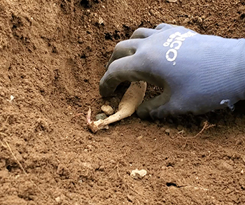
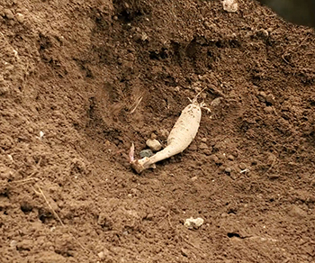
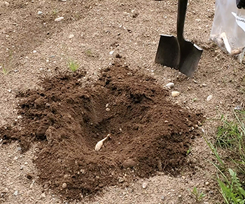

As you can see, the tuber has a happy sprout ready to grow.
How To
Planting dahlia tubers:
Dig a well in the soil.
  
The tuber can be placed any direction, irregardless of which way the sprout may be growing so long as it is laying horizontal in the ground.
Cover with a loose layer of soil about one inch deep.
Pat the soil around where the tuber was planted to stabilize the well and you're finished!
Watering:
On hot days, we water daily, preferring to do so during the cool of morning or evening. However, on cooler days, we hold off on watering if the soil is still wet.
When we water, we give enough to each plant to nearly fill the well we made when planting.